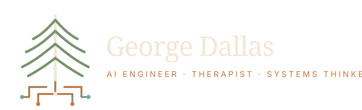

AI Engineering
Useful intelligent systems
Reliable, ethical, human-centred AI work with practical outcomes.

AI Engineer · Therapist · Systems Thinker
A grounded personal website identity where Vancouver Island natural materials meet AI engineering, therapeutic care, and systems thinking.
AI Engineering
Reliable, ethical, human-centred AI work with practical outcomes.
Therapy
A visual language that can hold professional credibility and warmth.
Systems
Clear structures for writing, projects, books, timelines, and links.
Deep Cedar
#18120E
Burnt Umber
#241B16
Warm Linen
#F1E8D8
Copper
#C47A45
Desaturated Cyan
#6CA6A8
Fern
#78946F